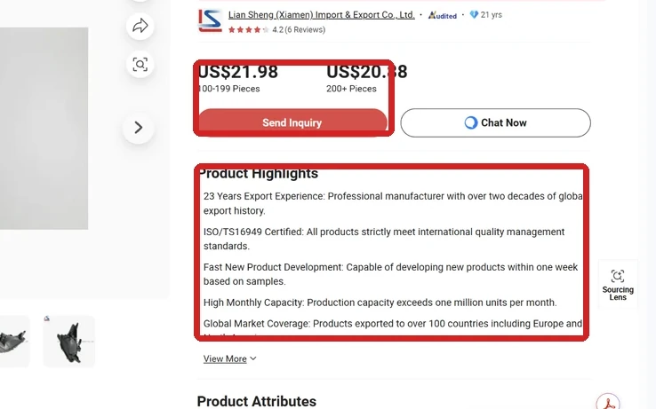

Freelance · Conversion research · 2026
The order was ready. The total wasn't.
A live Alibaba conversion study: search, evaluate, build checkout, create the order — then stop. The brief asked for 100 pairs; the checkout ran at the listing's 50-set minimum. The blocker was the landed cost, not the product.
- 4journey stages audited
- 3platforms compared
- 69.6%freight vs item